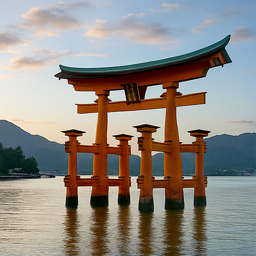

Santuaire d'Itsukushima – Le Torii flottant du Japon
Émergeant élégamment des eaux de la baie d'Hiroshima, le Santuaire d'Itsukushima (厳島神社) sur l'île de Miyajima est l'un des lieux les plus fascinants et spirituellement vénérés du Japon. Célèbre pour son torii flottant de couleur vermillon, ce sanctuaire shintoïste enchante les voyageurs depuis des siècles avec son architecture unique, sa sacralité et son magnifique environnement naturel.
Une île sacrée en harmonie avec le sanctuaire
Construit à l'origine au VIe siècle et reconstruit dans sa forme actuelle en 1168 par le puissant seigneur de guerre Taira no Kiyomori, le Santuaire d'Itsukushima a été dédié aux filles de la divinité de la mer Susanoo-no-Mikoto. L'île étant considérée comme sacrée, le sanctuaire a été construit sur des pilotis au-dessus de la mer, permettant aux croyants de s'en approcher sans fouler le sol sacré.
Le Torii flottant – Un symbole du Japon
S'élevant à plus de 16 mètres, le majestueux torii semble flotter lors de la marée haute, créant une silhouette mystique et inoubliable contre l'horizon. Lors de la marée basse, les visiteurs peuvent marcher jusqu'à sa base. Cette relation avec la mer reflète le respect shintoïste pour la nature, et le torii est devenu l'un des symboles les plus reconnaissables du Japon.
Patrimoine UNESCO et importance culturelle
En 1996, le Santuaire d'Itsukushima a été désigné Patrimoine Mondial de l'Humanité par l'UNESCO, en reconnaissance de sa valeur historique, spirituelle et architecturale. Ses couleurs vermillon audacieuses sont censées éloigner les mauvais esprits, tandis que ses couloirs ouverts et son théâtre flottant incarnent le style classique de l'époque Heian.
Miyajima : plus qu'un simple sanctuaire
L'île de Miyajima, souvent appelée « Île des Dieux », offre bien plus que le simple sanctuaire. Promenez-vous dans ses rues pittoresques remplies de boutiques de Momiji Manju (gâteaux en forme de feuille d'érable), rencontrez les cerfs sauvages amicaux, ou montez au Mont Misen pour profiter d'une vue panoramique sur la mer intérieure de Seto. Au coucher du soleil, le torii est illuminé, créant une atmosphère magique sur l'eau.
Informations pour les visiteurs
- 🌸 Emplacement : Île de Miyajima, Hatsukaichi, Préfecture d'Hiroshima
- 🌸 Horaires d'ouverture : 6:30 – 18:00 (les horaires peuvent varier selon la saison)
- 🌸 Entrée : ¥300 (frais supplémentaires pour la salle du trésor ou le théâtre Noh)
- 🌸 Comment y arriver : Train JR depuis Hiroshima jusqu'à la station Miyajimaguchi → Ferry de 10 minutes pour Miyajima
Pourquoi visiter le Santuaire d'Itsukushima ?
Que vous recherchiez la sérénité spirituelle, des photographies époustouflantes ou une immersion dans la tradition shintoïste japonaise, le Santuaire d'Itsukushima est une destination inoubliable. Son architecture élégante, son héritage culturel et son lien profond avec la mer en font l'une des expériences de voyage les plus mémorables du Japon — il mérite une place dans chaque itinéraire.
Tags : Santuaire d'Itsukushima, Torii flottant, Île de Miyajima, site UNESCO Japon, attractions Hiroshima, sanctuaire shintoïste Japon, sanctuaires panoramiques, voyage spirituel, torii Miyajima, patrimoine japonais
Vous planifiez une visite au Santuaire d'Itsukushima ?
Pour vivre une expérience plus immersive et authentique, nous vous conseillons de réserver un guide privé local certifié par notre équipe. Toutes nos guides sont des professionnels certifiés officiellement reconnus par le gouvernement japonais, et offrent des visites personnalisées en fonction de vos intérêts. Contactez à l'avance le guide de votre choix pour vérifier la disponibilité et obtenir une assistance experte pour votre voyage.